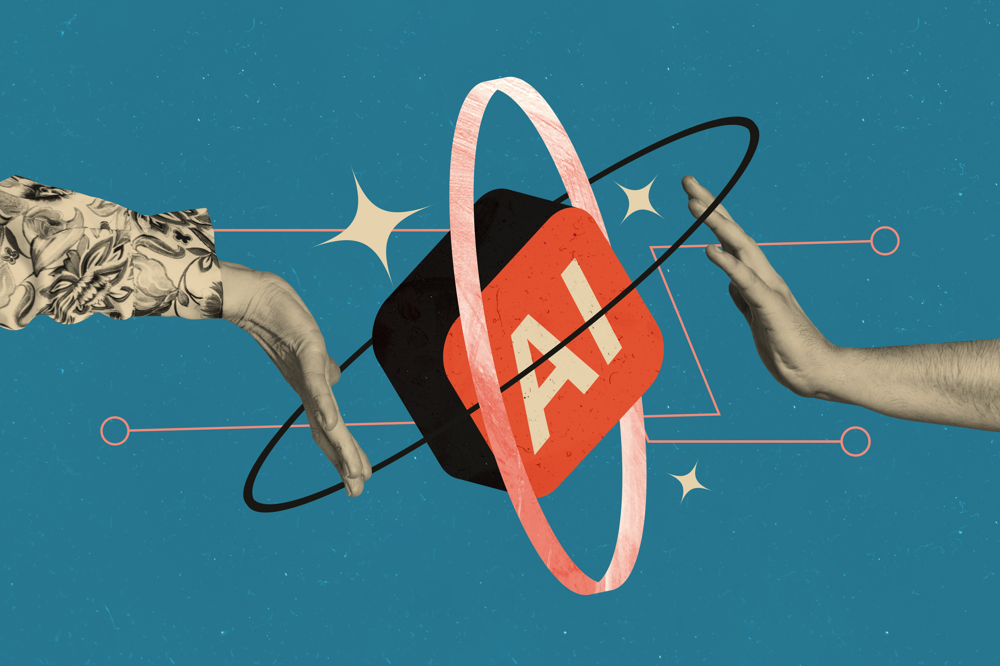

From strategy and use case discovery to generative AI, machine learning, and agentic systems — engineered for scale, governed for production, owned by your team.
Most enterprises have spent the last two years experimenting with AI. Most have very little to show for it in production. Pilot projects stall in compliance review. Demos look great but never connect to operational systems. Models drift, fail silently, or produce outputs no one trusts.
Alpine Quantum's AI practice exists to close that gap. We design, build, and deploy AI systems that survive the journey from notebook to production — with proper evaluation, observability, governance, and accountability built in from day one.
We work across the full AI stack: classical machine learning, deep learning, generative AI, agentic systems, and the infrastructure that makes them reliable in production.

Four core practice areas — combined or standalone — to take your AI initiative from idea to production.
We help leadership teams identify the AI opportunities that actually matter — and the ones that don't. Use case discovery, feasibility assessment, ROI modeling, and roadmap design.
Production-grade applications built on large language models — retrieval-augmented generation, chat agents, document understanding, code generation, and content automation.
Autonomous and semi-autonomous AI agents that take action across enterprise systems — with proper tool use, memory, planning, and human-in-the-loop oversight.
Classical ML and deep learning systems for prediction, classification, recommendation, computer vision, and time-series forecasting — fully productionized.
We follow a four-phase approach designed to reduce risk, validate value early, and ensure every system we ship is operable by your team from day one.
Use case validation, data audit, success metrics, and architectural plan. We rule out projects that won't work in production before we write code.
Model selection, system architecture, integration plan, and an evaluation framework that defines exactly what "good enough to ship" looks like.
Agile delivery with weekly demos, continuous evaluation against the success metrics, and a deployment-ready system at the end of each sprint.
Production deployment, MLOps setup, observability dashboards, monitoring, and handover to your team — with optional managed-service support.
We're tool-agnostic but opinion-strong. These are the technologies we work in most often — chosen for production readiness, not novelty.
A Tier-1 financial institution needed to modernize its collections platform with production-grade machine learning that could handle 3.5 million monthly accounts. Working with Alpine Quantum, the bank deployed a custom ensemble model that meaningfully changed business outcomes within two quarters.
Read the full story →Tell us about your goals. A senior AI engineer will reply within one business day with honest scoping thoughts.
AI rarely ships alone. Most engagements span at least one of these adjacent practices.